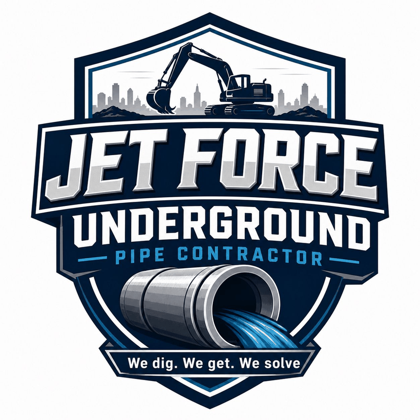

Jet Force handles grease traps, drain and sewer backups, water line issues, leak detection, sewer scopes, and underground pipe repairs across the Denver metro.
Clear diagnosis first. No down payment required on approved jobs. 24/7 emergency line.

One crew for grease, drain, sewer, water line, leak detection, sewer scopes, and underground pipe problems across the Denver metro.
Jet Force brings grease, drain, sewer, water line, leak detection, and underground pipe services together under one crew, so customers do not have to coordinate multiple contractors.
Prevent clogs, odors, and health code issues.
Clear blockages. Restore flow. Protect your pipes.
Pinpoint problems with high-definition video.
Long-lasting repairs for broken or collapsed pipes.
Leak detection, repair, and replacement.
Scheduled maintenance and emergency support.
Find hidden leaks fast. Save time and money.
Keep your system running smoothly year-round.
Most customers do not want to manage a grease company, a drain company, a sewer company, and an excavation crew just to solve one underground problem. Jet Force was built to make that simpler.
We diagnose first, explain what we found, and give clear options before work begins. If a repair is not needed, we say so. That is the standard this company was built on: honest work, clear answers, and everything underground handled under one roof.
Grease, drain, sewer, water line, and underground pipe support, all in one place.
You see the plan and the price before any work begins. No surprises.
We scope the line before any major repair, so the fix matches the real problem.
Active backups and leaks do not wait, and neither do we. On call around the clock.
Homes, restaurants, commercial, and B2B: one team that handles every site.
We respond quickly and get to work.
You get the facts, not sales pressure.
No down payment on approved jobs.
Backup, leak, grease trap issue, sewer concern, broken line, or emergency.
We check your service area and whether same-day or emergency response is available.
When needed, we inspect, scope, or locate the issue before recommending a repair.
We explain what we found, what it may cost, and what can happen if it is ignored.
No vague surprises. No down payment required on approved jobs.
Jet Force serves core Denver metro areas with grease trap, sewer, drain, leak detection, water line, and underground pipe services. Emergency availability may vary by location and job type, so call to confirm same-day response.
Outside these areas, or need same-day service? Call and we'll confirm a fast response.
Call to ConfirmYes, Jet Force has a 24/7 emergency line for urgent drain, sewer, pipe, leak, and backup issues. Availability depends on location and job type.
Yes, Jet Force provides grease trap cleaning and FOG-related service for restaurants and commercial kitchens.
Yes, Jet Force serves homeowners, restaurants, and commercial properties across the Denver metro area.
When needed, Jet Force uses diagnosis methods such as sewer scope inspections or leak detection before recommending major work.
No down payment is required on approved jobs. Payment is due when the work is complete and the customer is satisfied.